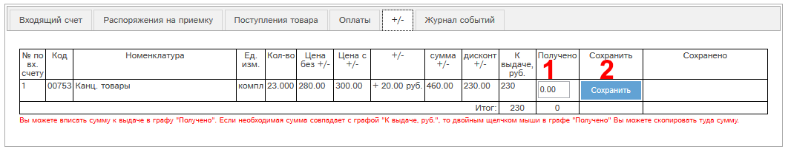
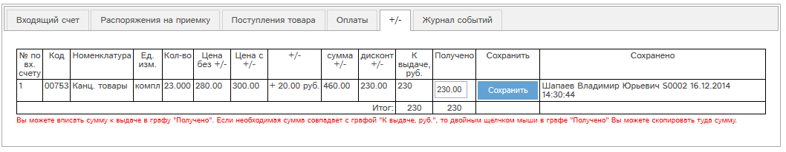

После утверждения счета, создания по нему всех связанных документов, выполнения счета (когда счет перейдет в статус «выполнен»), в счете станет доступна работа с вкладкой «+/-»:

Рис. 4.3 Вкладка «+/-» в карте выполненного счета.
На этой вкладке указано, сколько требуется выдать +/- по каждой позиции и по всему счету, и сколько выдано.
Чтобы указать выданный +/-, необходимо вписать его значение в колонку «Получено» (1) и нажать кнопку «Сохранить» (2). Если в графе "Получено" требуется указать полную сумму из графы "К выдаче", то необходимо сделать двойной клик в графе "Получено":

Рис. 4.4 Вкладка «+/-» в карте выполненного счета: выданный +/- сохранен.